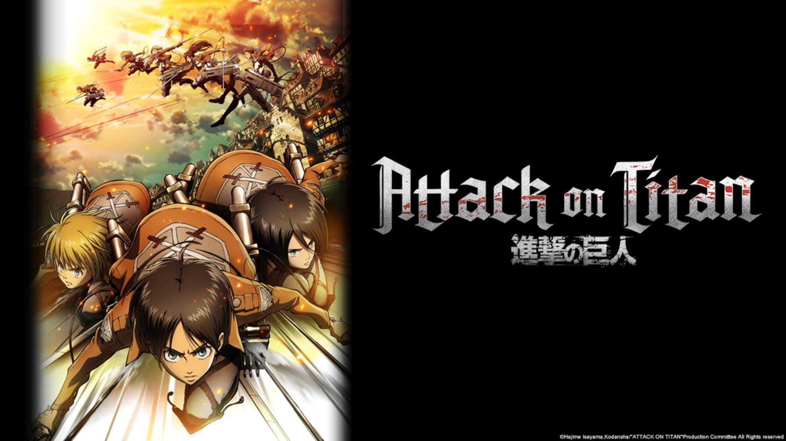

melhores anime para você assistir em casa para passar o tempo
1. ONE PIECE
POR QUE ASSISTIR
Eu recomendaria assistir, por que o anime é muito grande isso tem seu lado bom mais também tem um lado ruim, o lado ruim é que demora muito pra terminar e da preguiça, o lado bom é que o anime é muito explicativo você entende rapido a historia isso faz ele ser muito bom. Eu acho o estilo do one piece muito bom pois envolve drama, ação, comedia, ficção, um poco de cada aspecto. Eu gostei dele por que as lutas a qualidade das cenas ele seria um dos anime que eu recomendaria.🏴☠️
Bom a historia começa com um menino chamado monkey d. luffy a historia começa com um menino chamado monkey d. luffy com seu sonho de tornar o maior pirata (rei dos pirates), quando completa seus 17 anos sai em um bote a busca de companheiros para tornar-se de fato um pirata com tripulação, e assim vai viajando, pela grand-line (nome do mar desse anime), conhecendo companheiros tem o seu primeiro companheiro Zoro o espadachim, Nami a navegadora, Ussop o atirador, Sanji o cozinheiro, Chopper o medido, Nico Robin uma arquiologa, Franky o construtor, Brook o musico, Jinbe o navegador e esses são seus companheiros até o momento, para se tornar o Rei dos Piratas o antigo rei dos piratas enterrou um tesouro chamado One Piece, quem encontrar esse tesouro passa a ser o novo rei dos piratas.👒🍖
Nesse mundo tem umas frutas chamadas de Akuma no Mi que da poder a quem as come, tipo se a fruta for de raio você fica com poder de raio e assim vai, tem 3 tipos de frutas de frutas as logia as paramecia e as zoan
logia: são fruta que tudo atravessa um exemplo se o personagem comer a fruta da fumaça, quando algo atinge o corpo dele atravessa porque essa parte do corpo vai virar fumaça,
Paramecia é um dos três tipos de Akuma no Mi.🍎
Paramecia: Quem as come ganha o poder de modificar sua estrutura corporal , produzir substâncias e manipular essas substâncias e o ambiente (como um terremoto), dependendo da Akuma no Mi.🌊
Exemplo: Buggy comeu a Bara Bara no Mi, que dá a ele a capacidade de dividir seu corpo em pedaços, zoan permite ao usuário se transformar em um animal ou em uma forma híbrida entre humano e animal.🔥
Essas frutas concedem ao usuário habilidades físicas incríveis, como aumento de força, velocidade e resistência, e, em alguns casos, a capacidade de se comunicar com a espécie animal correspondente.⚡️
O luffy o protagonista comeu a fruta da borracha e essa fruta o concede que seu corpo é de borracha então balas não funciona e nem soco, mais tem os hakis o haki do armamento haki da observação e o haki do rei,haki do armamento e o haki da observação mesmo que você não tenha eles você consegue ele treinando, ja o haki do rei você tem que nascer com ele, bom o mais forte deles é o haki do rei ate porque tem que nascer com ele o mais difícil qualquer pessoa que esteja perto e for mais fraca do que o quem tem o haki do rei fica iconciente perto dele e também deixa quem usa mais forte, o haki da observação deixa você ver um pouco do futuro assim você consegue se esquivar mais esses haki também faz você perder energia e quanto menos energia mais fraco fica suas abilidades, haki do armamento esse haki é muito bom motivo quem tem uma fruta logia tudo que ating atravessa mai se você estiver com o haki do armamento ele não atravessa.✨ ⚓️
VIDEO EXPLICANDO
2. DARLING IN THE FRAXX
POR QUE ASSISTIR
"Darling in the FranXX" é uma série anime distópica que se passa num futuro pós-apocalíptico, onde a humanidade está a sobreviver num planeta devastado. Os humanos são chamados de "parasitas" e vivem isolados em "gaiolas" que simulam um passado distante, para que possam desenvolver as emoções necessárias para pilotarem os robos chamados "FranXX". Os adultos vivem nas "plantações", cidades tecnológicas que exploram a energia de magma, e estão a utilizar as crianças "parasitas" para lutar contra as criaturas chamadas"Klaxosaurs" que defendem o planeta. 🤖💥🌸
Na minha opinião ele é um anime muito bom ele é um anime de romance, em um mundo cheio de criaturas chamados de klaxosaur, eles eram encinados que os klaxosaur eram demônios que atacavam a eles então teriam que revidar, e as pessoas usavam adolecentes para dirigir fraxx que era uns robos de ataque bem grandes, os adolecentes eram decodificados com número como 017 016 etc, no primeiro episodio uma menina a 002 aparece o protagonista gosta dela mais ela faz parte de um experimento pegaram sangue dos klaxosaur e colocaram nela,em um determinado tempo eles descobrem que aqueles klaxosaur não eram monstros por que quem atacou eles primeiros foram os humanos antigamente eles viviam bem mais um humano foi no habitate desses klaxosaur e atacou eles, assim eles passaram a atacar os humanos e virou meio que uma guerra, mais depois os adolecentes descobrem, que os klaxosaur naõ eram monstros e ficam do lado dos klaxosaur e começa atacar um cara meio que um rei, eu acho bom por causa desse plot twist e a relação desses adolecentes durante o anime é comedia drama e romance, eu recomendo muito assistir.❤️🚀
VIDEO EXPLICANDO
3. NARUTO
POR QUE ASSISTIR
Resumo
A história gira em torno de Naruto Uzumaki, um jovem órfão que cresce na aldeia de Konoha, conhecida como a "Aldeia Oculta da Folha". Desde o nascimento, Naruto carrega um grande fardo: dentro dele está selado o Nove-Caudas (Kyūbi), uma poderosa e destrutiva raposa demoníaca. Isso faz com que Naruto seja temido e isolado pelas pessoas ao seu redor. ⚔️🐉
Apesar disso, Naruto é cheio de energia e sonha em se tornar o Hokage, o líder da aldeia. Ele é extremamente determinado e tem um forte senso de justiça.🍃🌀
Ao longo do anime, Naruto faz amigos valiosos, como Sasuke e Sakura. Juntos, eles passam por diversas missões e aventuras, treinando para se tornarem ninjas cada vez mais poderosos.🍥
O que você vai ver em Naruto?
1. A Jornada de Naruto:
No começo, ele é um garoto solitário, mas ao longo do anime, você verá sua evolução como ninja e pessoa.🔥🍂
2. Relacionamentos Complexos:
A amizade entre Naruto e seus amigos, principalmente a rivalidade com Sasuke, é um dos pontos principais.🌙🌸
3. Lutas Épicas:
Naruto é conhecido por batalhas emocionantes e estratégias ninja. Técnicas como Rasengan e o Modo Sábio ganham destaque.🍜🦊
4. Temas de amizade, perseverança e superação:
Um dos grandes temas é a ideia de nunca desistir, mesmo em momentos difíceis. 🗡️🛡️🦊
5. Arcos de História:
O anime é dividido em arcos com diferentes vilões, como a Akatsuki, Pain e Madara. ⚔️🎴👺
6. Personagens Complexos:
Personagens como Kakashi, Hinata e Gaara têm histórias profundas e evoluem com o tempo. 🐇🐦🌸
7. Naruto Shippuden:
A sequência mostra Naruto mais maduro, enfrentando ameaças maiores e tentando trazer Sasuke de volta. 🗡️🎴👊
VIDEO EXPLICANDO
4. SOLO LEVELING
POR QUE ASSISTIR
Eu recomendaria assistir e ler o manga porque ele ainda não lançou em inteiro o anime, ele é muito bom meio que no anime se passa em um mundo que nesse mundo tem varios portais chamado de dungeon nessas dungeon é cheio de monstro tipo ogro, elfos, cobra gigante e outros, e esses portais tanto quanto as pessoas desse mundo tem rank, vou dar um exemplo se tiver uma dungeon rank S um caçador de rank S com um grupo vai la na dungeon, ai você pensa porque tem que ir mais de um caçador tanto por que eles atacam os monstros mais fracos da dungeon enquanto o caçador mais forte que entrou na dungeon tenta chegar ao lider deles o boss para matar e assim fechar o portal, e também tem vario materias dentro dessa dungeon materias bons e caros para fazer espadas, escudos, armaduras ou vender uma parte desse grupo de caçadores vão para coletar essas pedra.👹💀🏰
Em "Solo Leveling", Sung Jin-woo, um caçador de Rank E (o mais fraco), é um protagonista que se encontra em uma situação desesperadora.
Ao entrar em uma missão de nível avançado, ele é brutalmente derrotado, mas, em vez de morrer, é abençoado com um sistema de jogo que o permite aumentar de nível e fortalecer-se. Este sistema o ajuda a sobreviver e a se tornar o caçador mais forte do mundo, sozinho, contra monstros e outros caçadores.🕷️🐉🦇
a jornada de Sung Jin-Woo, um caçador de monstros considerado o mais fraco de todos. A história começa quando ele entra em uma masmorra perigosa e acaba ficando preso lá dentro, quase morrendo. Mas, de alguma forma, ele consegue sobreviver e, a partir daí, descobre que ganhou a habilidade de "level up" — ou seja, de evoluir e melhorar suas habilidades de forma contínua, como em um jogo.👹🏰
Ao longo da história, Jin-Woo se torna cada vez mais forte, enfrentando monstros cada vez mais perigosos, enquanto tenta proteger as pessoas ao seu redor e descobrir os segredos por trás das masmorras e dos poderes que ele. A trama mistura ação, aventura e um pouco de mistério, e mostra a evolução dele de um caçador fraco a um dos mais poderosos.🧙♂️⚔️🔥
É uma história bem empolgante para quem gosta de fantasia e batalhas épicas!🌑💥
VIDEO EXPLICANDO
5. ATACK ON TITAN

POR QUE ASSISTIR
"Attack on Titan" (Shingeki no Kyojin) é uma série de anime que conta a história da humanidade lutando pela sobrevivência contra criaturas gigantes e antropófagas chamadas Titãs. Os humanos, forçados a se esconder dentro de grandes muralhas, lutam para compreender o enigma dos Titãs e encontrar uma forma de sobreviver e reverter sua situação.🏰🏹💥
Detalhes da história
A história de "Ataque aos Titãs" (Shingeki no Kyojin) é sobre uma civilização humana dentro de três muralhas circulares, protegida de gigantes humanoides conhecidos como Titãs, que se alimentam de humanos. A trama acompanha Eren Jaeger, que jura exterminar os Titãs após a destruição de sua cidade e a morte de sua mãe pelas mãos de um deles.🔥🚪
Mundo
A série é ambientada em um mundo onde a humanidade é quase extinta pelos Titãs, criaturas que se alimentam de humanos e não têm inteligência aparente.🗡️⚔️🛡️🦅🧱🏰
Muralhas
Para proteger-se, a humanidade construiu três muralhas gigantes, mas elas não foram suficientes para impedir a chegada dos Titãs. 🧱🏰
Esquadrão de ataque (reconhecimento)
O protagonista, Eren Jaeger, juntamente com seus amigos Mikasa Ackerman e Armin Arlert, ingressam no Esquadrão de Reconhecimento para lutar contra os Titãs e descobrir a verdade sobre o seu passado.🗡️⚔️🛡️
Revelações e reviravoltas
A série é conhecida por seus mistérios, revelações surpreendentes e reviravoltas que mudam completamente a compreensão da história.🔄😲🤯
Personagens Multifacetados
Os personagens são profundamente explorados, mostrando suas motivações, conflitos internos e as consequências de suas ações.🎭🧩⚖️
Moralidade e Liberdade
A série também aborda questões complexas como moralidade, a natureza da liberdade e a luta pela sobrevivência. 🕵️♂️🤝🧟♂️
Final Polêmico
A série tem um final que gera debates e diferentes interpretações, deixando um legado duradouro no mundo dos animes. ⚔️😢💔
Resumo
Em resumo: "Attack on Titan" é uma história de sobrevivência, aventura e reflexão, que combina elementos de ação, terror, ficção científica e drama. É um anime que cativa e surpreende, com personagens cativantes e uma história que explora a condição humana em um mundo de terror. 🌍🕊️⚖️
VIDEO EXPLICANDO
pra mim esses são os top 5 melhores animes
local para assistir esses animes
tomato
é um aplicativo gratuito, nele contém animes mangas e filmes de anime, é um app muito bom eu mesmo uso ele pra assistir, quando sai novos episodio ja tem no tomato eu recomendo
netflix
ele tem one piece, naruto, solo leveling e atack on titan mais eu não recomendo assistir pela netflix por que alem de você ter que pagar a netflix, na netflix não tem os animes se não for dublado, mais os episodios que tem são muito bons boa qualidade, alem disso na netflix tambem tem varios filmes series tanto animes e filmes.
crunchyroll
a crunchyroll é um aplicativo para animes, tem animes e filmes, mais tem alguns animes que não tem na crunchyroll, então eu recomendaria você pesquisar no google antes de pagar a crunchyroll.
prime video
na prime video é mais para filmes series mais tem alguns animes lá tem solo leveling e naruto
esse são os locais que eu conheço para assistir animes
obrigado por visitar a esse site
autor: kauan antonio ribeiro dos santos
data publicada:11/06/2025
.png)